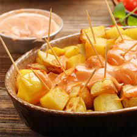

Patatas bravas

Description
Nothing screams tapas more than nice, freshly fried potato cubes with salsa brava
Ingredients
- 2kg Potatoes
- 1 large onion
- 4-5 garlic cloves
- 1 Tbpn sweet paprika
- 1 Tbpn smoked/spicy paprika (or ground cayenne)
- 1 Tbsn flour
- 250 ml broth (chicken, veggie...)
- Oil for frying
- Salt
Steps
- Peel and chop into 2-3cm cubes all the potatoes, wash and dry
- In a large pot, heat enough oil for frying, and once it's hot add the potatoes. Fry until golden, remove and let soak in paper. Add salt while hot
- For the sauce, peel and chop in large chunks the garlic and onion
- In a pan with about 4 tablespoons of hot oil, fry the garlic, then the onion, careful to not burn them
- When the onion and garlic are golden, add the flour and mix until the flour is cooked
- Add both paprika and the broth, mix well and cook for a couple minutes
- Blend all the ingredients together until smooth
- Add the sauce to the potatoes and enjoy!